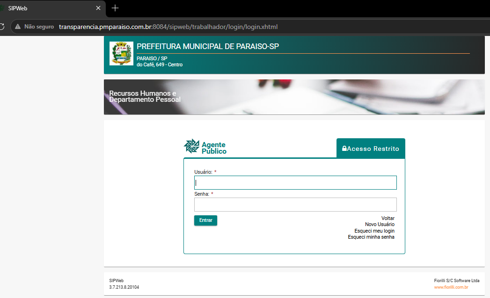

1
Primeiro acessoEntre com o seu CPF — usuário E senha
Abra o endereço do sistema e preencha os dois campos com o mesmo dado: o seu CPF.
- Usuário: o seu CPF
- Senha: o seu CPF
- Clique em Entrar
preenchimento dos campos
# SEM pontos, SEM traço, SEM espaços — SOMENTE números
Usuário: 123.456.789-01 ✗ errado
Usuário: 12345678901 ✓ certo
Senha: 12345678901 ✓ certo (igual ao usuário)
Usuário: 123.456.789-01 ✗ errado
Usuário: 12345678901 ✓ certo
Senha: 12345678901 ✓ certo (igual ao usuário)
As partes do CPF somem na hora de digitar
123.456.789-01
→
12345678901
💡 Endereço do sistema:
transparencia.pmparaiso.com.br:8084/sipweb/trabalhador/login/login.xhtml — salve nos favoritos para facilitar.⚠️ Esqueceu a senha? Na própria tela de login use Esqueci meu login / Esqueci minha senha. Depois de entrar, troque a senha em Alterar Acesso.

🔍 Clique para ampliar